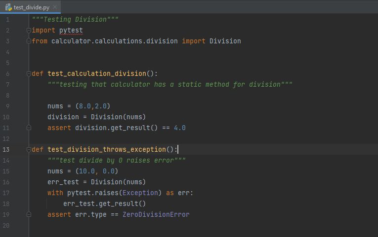

Introduction to AAA Testing in Python
When writing programs, getting into the habit of testing all of the methods and functions in your program is important, especially when in a professional setting. If you are creating a very large program with many different classes and methods, then it may become hard to find errors that pop up in your code. This is where AAA testing comes in.
Arrange-Act-Assert (AAA) testing is a formula for testing methods that verifies they are running correctly.
Arrange
The first step is to Arrange the test cases. This involves instantiating objects, logging into databases, clearing previous iterations, etc.
Act
The next step is to Act on the target behavior. This is the main function or method being tested which requires that function or method to be called, operation to be performed, etc.
Assert
Based on the Arrange and Act steps, the final step is to Assert the expected outcome. Assertions determine whether the test passes or fails. Assertions can check for values, other properties of a program, etc.
An example of AAA testing would be this test for the divide function of a calculator I created in PyCharm.
This divide class works by accepting a tuple of numbers and dividing them sequentially until it reaches the end. Both functions follow the AAA testing pattern but perform different tests. The first function creates a simple tuple and asserts that the expected outcome is generated. If a 0 is in the tuple, the divide class raises a DivideByZero error and stops the program. The second test explicitly activates this and asserts that the correct error is raised.
The repository for this division test and calculator can be found here